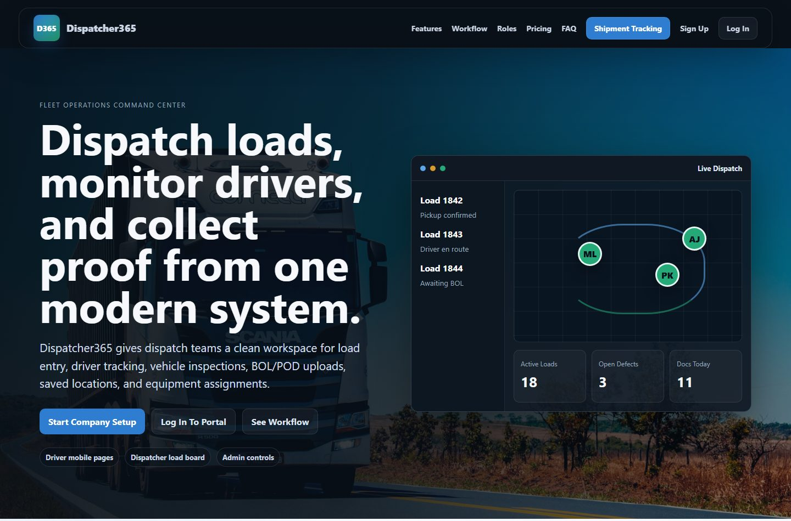
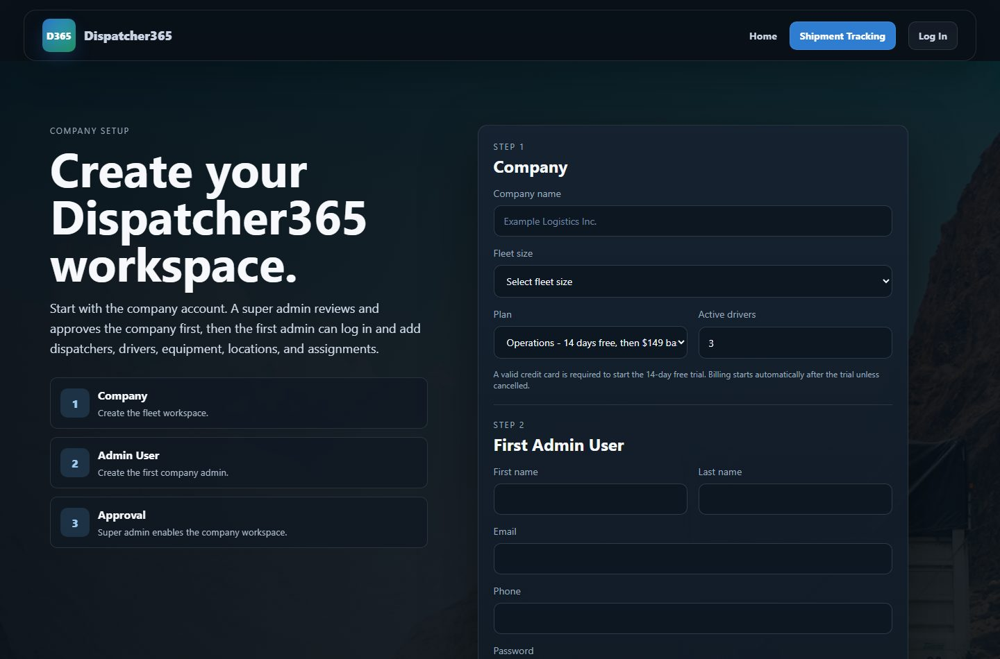
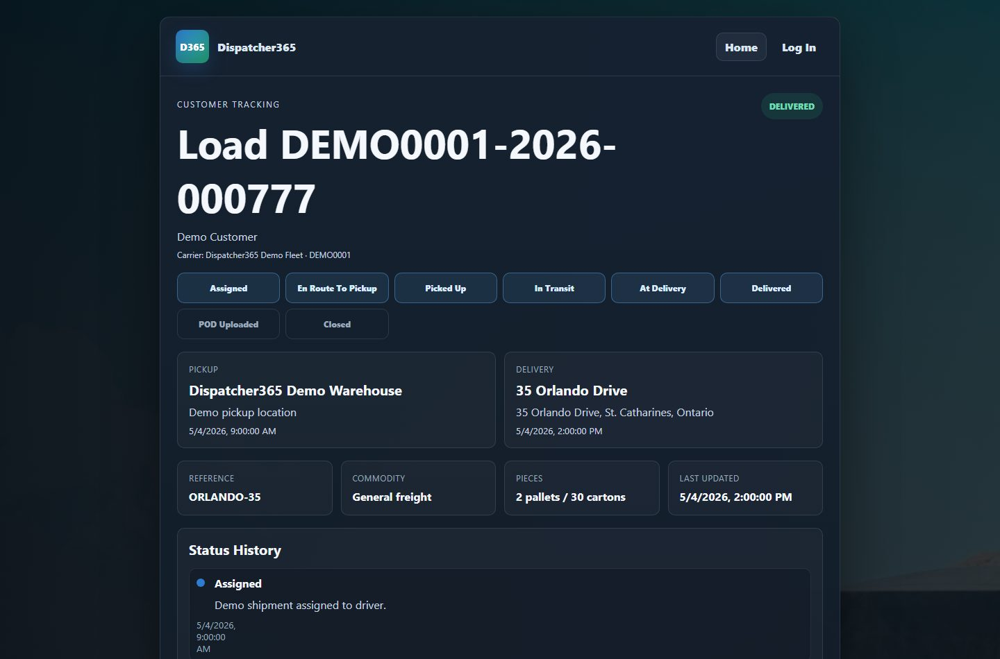
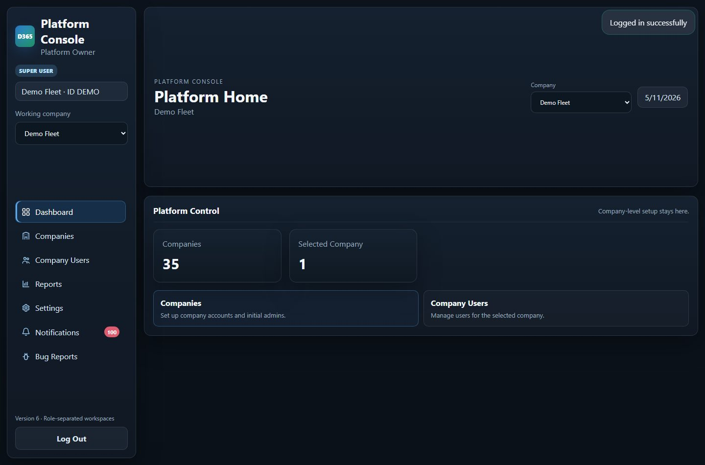
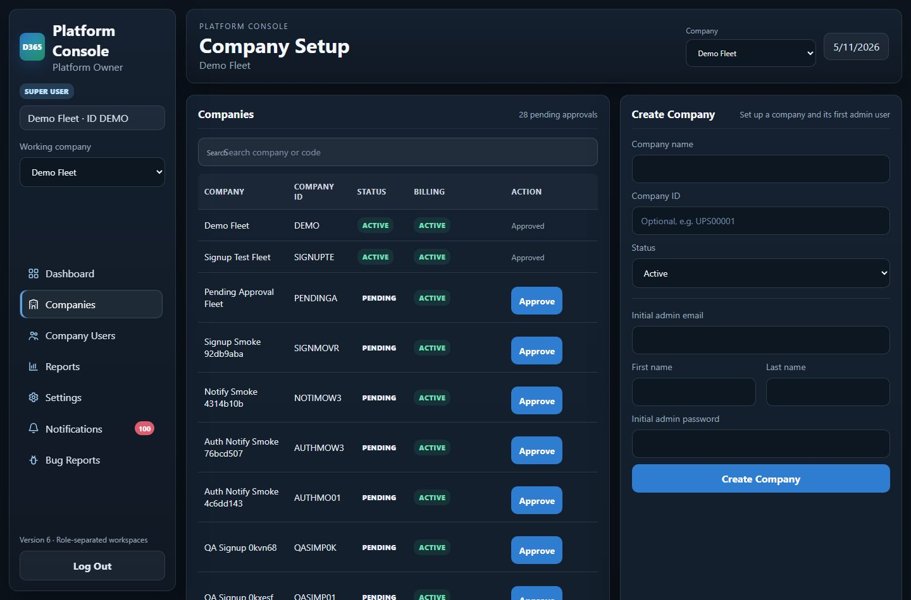
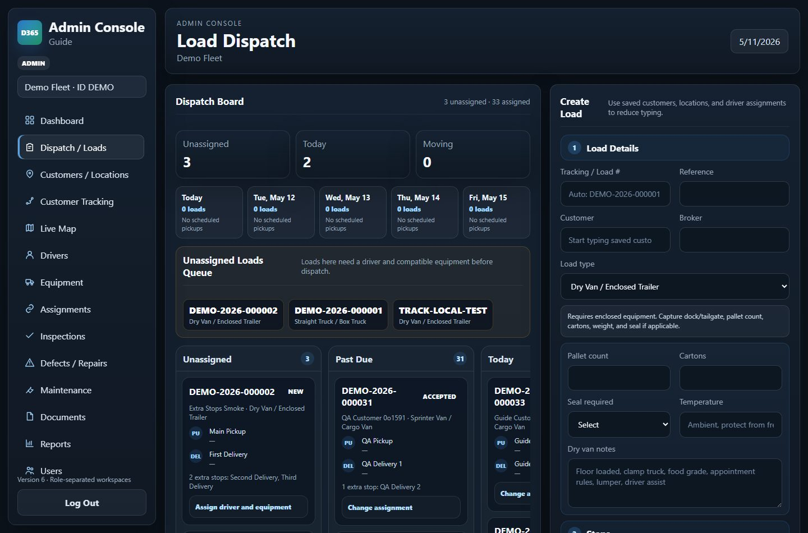
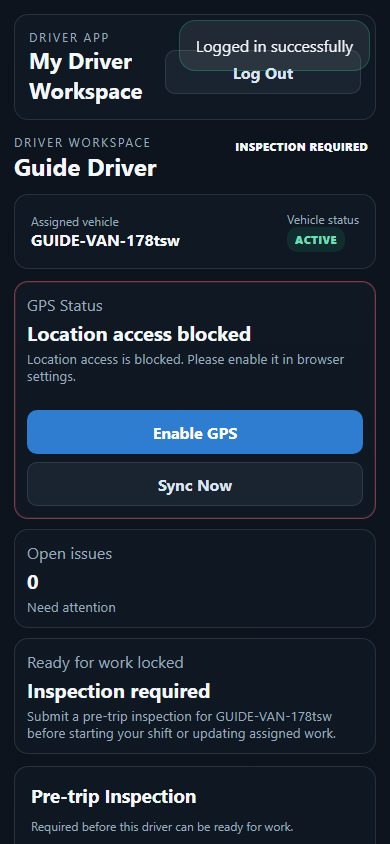
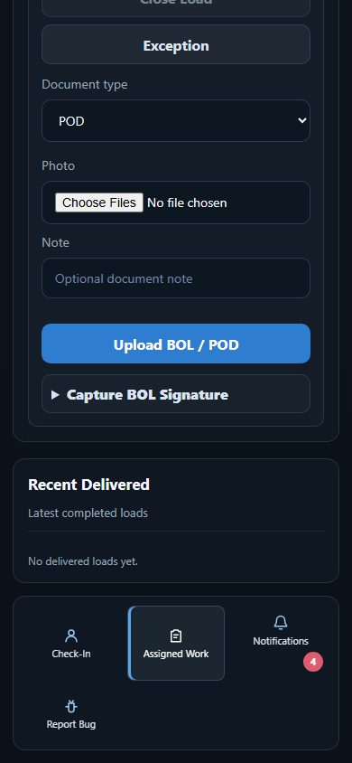
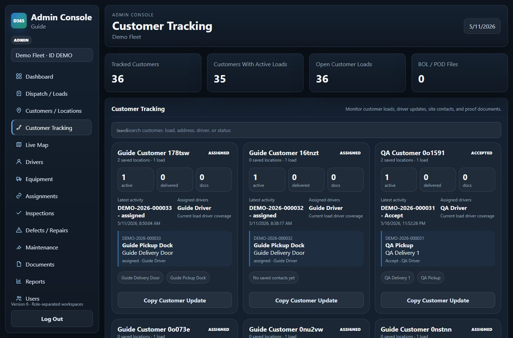
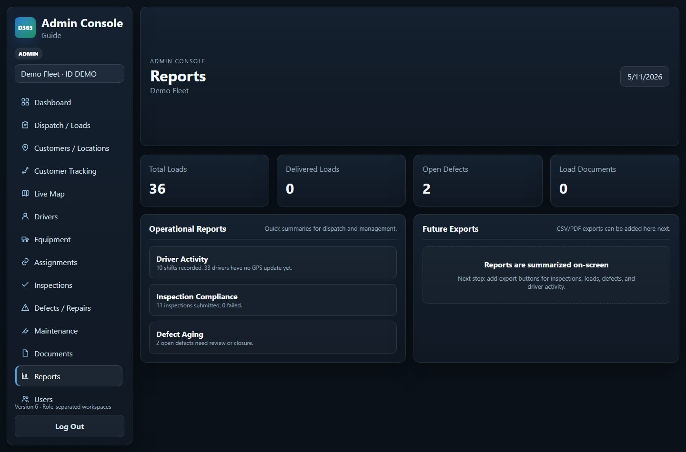

ਮਾਰਕੀਟਿੰਗ ਪੇਜ ਅਤੇ ਕੀਮਤਾਂ
- ਹੋਮ ਪੇਜ ਖੋਲ੍ਹੋ।
- ਕੀਮਤਾਂ ਅਤੇ ਫੀਸ ਮੀਨੂ ਦੇਖੋ।
- ਜਦੋਂ ਗਾਹਕ ਤਿਆਰ ਹੋਵੇ ਤਾਂ Start 14-Day Trial ਚੁਣੋ।

ਕੰਪਨੀ ਸਾਈਨਅਪ
- ਕੰਪਨੀ ਨਾਮ ਅਤੇ ਫਲੀਟ ਸਾਈਜ਼ ਭਰੋ।
- ਪਲਾਨ ਅਤੇ ਐਕਟਿਵ ਡਰਾਈਵਰ ਗਿਣਤੀ ਚੁਣੋ।
- ਪਹਿਲਾ ਐਡਮਿਨ ਯੂਜ਼ਰ ਬਣਾਓ।
- Stripe ਟਰਾਇਲ ਨਾਲ ਕਾਰਡ ਜੋੜੋ।

ਪਬਲਿਕ ਸ਼ਿਪਮੈਂਟ ਟਰੈਕਿੰਗ
- Shipment Tracking ਖੋਲ੍ਹੋ।
- ਲੋਡ ਜਾਂ ਟਰੈਕਿੰਗ ID ਦਾਖਲ ਕਰੋ।
- ਸਟੇਟਸ ਹਿਸਟਰੀ, ਸਟਾਪ ਅਤੇ ਮਨਜ਼ੂਰ ਡੌਕੂਮੈਂਟ ਦੇਖੋ।

ਐਡਮਿਨ ਹੋਮ
- ਐਡਮਿਨ ਜਾਂ ਸੁਪਰ ਐਡਮਿਨ ਵਜੋਂ ਲਾਗਇਨ ਕਰੋ।
- ਡੈਸ਼ਬੋਰਡ ਕਾਰਡਾਂ ਰਾਹੀਂ ਸੈਟਅਪ ਖੇਤਰ ਖੋਲ੍ਹੋ।
- ਯੂਜ਼ਰ ਲਾਗਇਨ ਤੋਂ ਪਹਿਲਾਂ ਕੰਪਨੀ ਮਨਜ਼ੂਰੀ ਅਤੇ ਬਿਲਿੰਗ ਸਟੇਟਸ ਚੈਕ ਕਰੋ।

ਕੰਪਨੀ ਮਨਜ਼ੂਰੀ ਅਤੇ ਬਿਲਿੰਗ
- Company Setup ਖੋਲ੍ਹੋ।
- ਪੈਂਡਿੰਗ ਕੰਪਨੀਆਂ ਨੂੰ ਮਨਜ਼ੂਰ ਕਰੋ।
- Mark Paid ਸਿਰਫ਼ ਬਿਲਿੰਗ ਵੇਰੀਫਾਈ ਹੋਣ ਤੋਂ ਬਾਅਦ ਵਰਤੋ।

ਡਿਸਪੈਚ ਬੋਰਡ ਅਤੇ ਲੋਡ ਬਣਾਉਣਾ
- Dispatch / Loads ਖੋਲ੍ਹੋ।
- ਸੇਵ ਕੀਤੇ customer/location ਫੀਲਡ ਵਰਤੋ।
- ਡਰਾਈਵਰ ਅਤੇ ਵਾਹਨ ਅਸਾਈਨ ਕਰੋ।
- ਬੋਰਡ ਰਾਹੀਂ today, upcoming, unassigned ਅਤੇ in-transit ਕੰਮ ਦੇਖੋ।

ਡਰਾਈਵਰ ਚੈਕ-ਇਨ ਅਤੇ ਇੰਸਪੈਕਸ਼ਨ
- ਡਰਾਈਵਰ ਮੋਬਾਈਲ ਤੇ ਲਾਗਇਨ ਕਰਦਾ ਹੈ।
- Check-In ਖੋਲ੍ਹੋ।
- Pre-trip inspection submit ਕਰੋ।
- Inspection ਤੋਂ ਬਾਅਦ shift start ਕਰੋ।

ਡਰਾਈਵਰ Assigned Work
- Assigned Work ਖੋਲ੍ਹੋ।
- One-tap status buttons ਵਰਤੋ।
- ਲੋੜੀਂਦੇ proof documents upload ਕਰੋ।
- ਜਰੂਰਤ ਹੋਣ ਤੇ signature capture ਕਰੋ।

Customer Tracking ਅਤੇ Visibility
- Customer Tracking ਖੋਲ੍ਹੋ।
- Customer ਜਾਂ load search ਕਰੋ।
- Update text ਜਾਂ tracking link copy ਕਰੋ।
- Load card ਤੇ public BOL/POD visibility ਚੁਣੋ।

ਰਿਪੋਰਟਾਂ, ਸੈਟਿੰਗਜ਼ ਅਤੇ ਸਪੋਰਟ
- Reports ਖੋਲ੍ਹ ਕੇ summary ਦੇਖੋ।
- Settings ਵਿੱਚ setup status confirm ਕਰੋ।
- App issue ਲਈ Bug Reports ਵਰਤੋ।

ਮਹੱਤਵਪੂਰਨ ਨੋਟ
ਹਰ ਕੰਪਨੀ ਦੀ ਜਾਣਕਾਰੀ company-scoped ਹੈ। Billing payment issue ਹੋਣ ਤੇ portal access block ਹੋ ਸਕਦਾ ਹੈ। Super admin approval ਅਤੇ active billing ਦੋਵੇਂ ਲੋੜੀਂਦੇ ਹਨ।